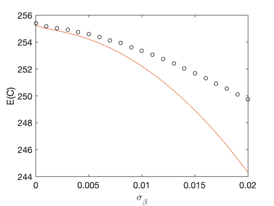
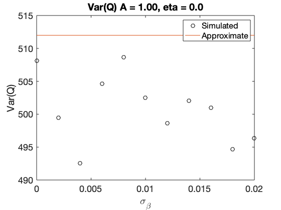
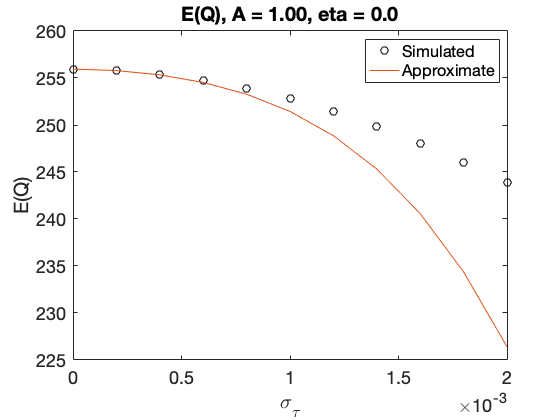
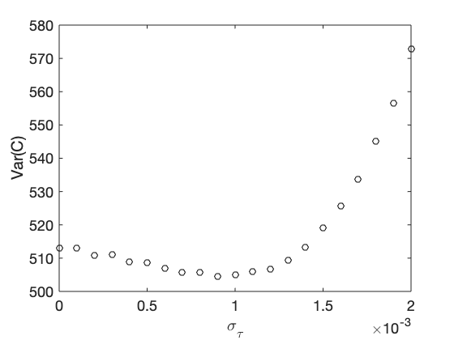

Compare approximate cost function distribution moments with simulation
tStart = tic; N = 256; T = 0.05; t0 = 2.5; [y, t]=thzgen(N, T, t0, 'taur', 0.4); Nmc = pow2(20); rng('default') sigbeta = (0:20)*1e-3; Nsig = length(sigbeta); C1MCbeta = zeros(Nsig,1); C2MCbeta = zeros(Nsig,1); C1appxbeta = zeros(Nsig,1); C1appxbeta2 = zeros(Nsig,1); C2appxbeta = zeros(Nsig,1); for i = 1:Nsig sigma = [1e-4 sigbeta(i) 1e-3]; Vmu = noisevar(sigma,y,T); sigmamu = noiseamp(sigma,y,T); resnorm = zeros(Nmc,1); for k = 1:Nmc ym = y + sigmamu.*randn(N, 1); resnorm(k) = sum((ym-y).^2.*1./noisevar(sigma,ym,T)); end C1MCbeta(i) = mean(resnorm); C2MCbeta(i) = var(resnorm); D = tdtf(@(theta, w) -1i*w, 0, N, T); ydot = D*y; C1appxbeta(i) = N - 9*N*sigma(2)^2 - sigma(3)^2*(1./Vmu)'*D.^2*Vmu ... + 36*sigma(2)^4*sum(y.^2./Vmu) ... + 4*sigma(3)^4*((D*y).^2./Vmu.^2)'*D.^2*Vmu ... - sigma(3)^4*(1./Vmu)'*D.^2*Vmu; C1appxbeta2(i) = N - 9*N*sigma(2)^2 - sigma(3)^2*(1./Vmu)'*D.^2*Vmu; C2appxbeta(i) = 2*N; end figure('Name','Expectation versus sigma_beta') plot(sigbeta,C1MCbeta,'ko', sigbeta, C1appxbeta, '-', ... sigbeta, C1appxbeta2, '-') legend('MC','Fourth order','Second order') xlabel('\sigma_\beta') ylabel('E(C)') figure('Name','Simulated variance versus sigma_beta') plot(sigbeta,C2MCbeta,'ko',sigbeta, C2appxbeta, '-') xlabel('\sigma_\beta') ylabel('Var(C)') sigtau = (0:20)*1e-4; Nsig = length(sigtau); C1MCtau = zeros(Nsig,1); C2MCtau = zeros(Nsig,1); C1appxtau = zeros(Nsig,1); C1appxtau2 = zeros(Nsig,1); C2appxtau = zeros(Nsig,1); for i = 1:Nsig sigma = [1e-4 1e-2 sigtau(i)]; Vmu = noisevar(sigma,y,T); sigmamu = noiseamp(sigma,y,T); resnorm = zeros(Nmc,1); for k = 1:Nmc ym = y + sigmamu.*randn(N, 1); resnorm(k) = sum((ym-y).^2.*1./noisevar(sigma,ym,T)); end C1MCtau(i) = mean(resnorm); C2MCtau(i) = var(resnorm); D = tdtf(@(theta, w) -1i*w, 0, N, T); ydot = D*y; C1appxtau(i) = N - 9*N*sigma(2)^2 - sigma(3)^2*(1./Vmu)'*D.^2*Vmu ... + 36*sigma(2)^4*sum(y.^2./Vmu) ... + 4*sigma(3)^4*((D*y).^2./Vmu.^2)'*D.^2*Vmu ... - sigma(3)^4*(1./Vmu)'*D.^2*Vmu; C1appxtau2(i) = N - 9*N*sigma(2)^2 - sigma(3)^2*(1./Vmu)'*D.^2*Vmu; C2appxtau(i) = 2*N; end figure('Name','Simulated expectation versus sigma_tau') plot(sigtau,C1MCtau,'ko', sigtau, C1appxtau, '-', sigtau, C1appxtau2, '-') legend('MC','Fourth order','Second order') xlabel('\sigma_\tau') ylabel('E(C)') figure('Name','Simulated variance versus sigma_tau') plot(sigtau,C2MCtau,'ko', sigtau, C2appxtau, '-') xlabel('\sigma_\tau') ylabel('Var(C)') toc(tStart)
Elapsed time is 920.237217 seconds.   